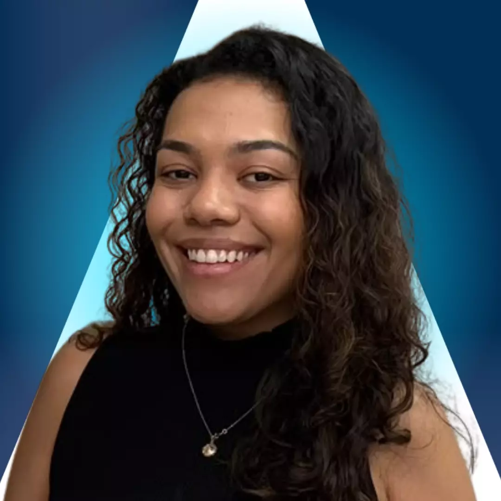
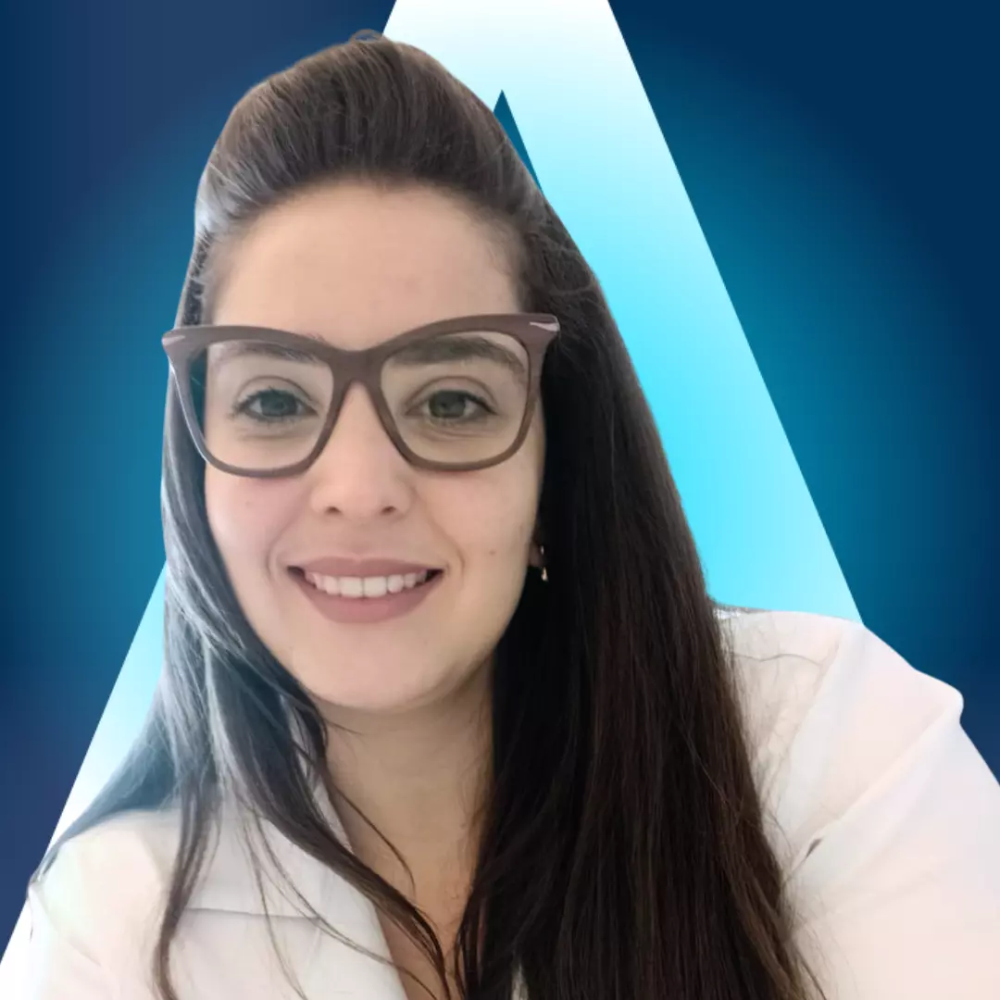

PSICOLOGIA · TCC
Paula
Adolescentes a partir de 12 anos, adultos, idosos e terapia de casal.
Conhecer perfil ↗Cuidado em saúde mental · Goiânia e online
Você não precisa ter todas as respostas para começar. A gente te ajuda a encontrar o profissional certo para o seu momento.

Conheça quem pode acompanhar você
Veja os profissionais apresentados pela Rede Âmago, conheça as abordagens e escolha com apoio da nossa equipe.
Adolescentes a partir de 12 anos, adultos, idosos e terapia de casal.
Conhecer perfil ↗Crianças a partir de 12 anos, adultos, idosos e terapia de casal.
Conhecer perfil ↗Atendimento psicológico para adolescentes, adultos e idosos.
Conhecer perfil ↗
Crianças a partir de 12 anos, adultos, idosos e terapia de casal.
Conhecer perfil ↗Adultos, idosos, terapia de casal e pessoas neurodivergentes.
Conhecer perfil ↗
Crianças a partir de 5 anos, adultos, idosos e terapia de casal.
Conhecer perfil ↗Crianças a partir de 5 anos, adolescentes, adultos, idosos e terapia de casal.
Conhecer perfil ↗Pós-graduado em Psiquiatria. Atende adultos a partir de 18 anos.
Conhecer perfil ↗Médica pós-graduada em Psiquiatria. Atende a partir dos 17 anos.
Conhecer perfil ↗Os nomes e informações profissionais seguem os perfis públicos da Rede Âmago. Confirme disponibilidade diretamente com a equipe.
Por onde começar?
Às vezes é difícil colocar em palavras. Tudo bem. Escolha um tema que se aproxime do que você sente — nossa equipe pode te ajudar a partir daí.
Esses temas são apenas um ponto de partida. A equipe conversa com você para entender suas necessidades.
Cuidado que faz sentido para você
Cada pessoa tem uma história. Nossa equipe acolhe você e ajuda a encontrar a modalidade mais adequada ao que está vivendo.
Um espaço de escuta e acompanhamento para compreender sentimentos, atravessar desafios e cuidar das relações consigo e com outras pessoas.
Conversar sobre psicologiaConsulta médica para avaliação, orientação e acompanhamento da saúde mental, com atenção à sua história e às suas necessidades.
Conversar sobre psiquiatriaVocê pode ser atendido em uma das unidades da Rede Âmago, em Goiânia, ou conversar com a equipe sobre as possibilidades de atendimento online.
Veja as unidadesA equipe pode orientar sobre disponibilidade, faixa etária e formato de atendimento durante a conversa inicial.
Sem pressa, sem julgamento
A primeira conversa é para entender o que você precisa e tirar suas dúvidas. A partir daí, vocês encontram juntos o caminho.
Falar com a equipeChame nossa equipe pelo WhatsApp. Pode ser uma pergunta ou só um “não sei por onde começar”.
A equipe entende seu momento e ajuda a identificar o tipo de atendimento que pode fazer sentido.
Com as informações em mãos, você decide o próximo passo no seu tempo.
Em Goiânia ou de onde você estiver
A Rede Âmago oferece atendimento em diferentes regiões de Goiânia e também conversa sobre a opção online.
Atendimento presencial com profissionais da Rede Âmago.
Consultar disponibilidadeAtendimento presencial na região do Buriti Shopping.
Consultar disponibilidadeAtendimento presencial na região do Setor Nova Suíça.
Consultar disponibilidadeFale com a equipe para conhecer as opções de atendimento online.
Pode perguntar
Se a sua pergunta não estiver aqui, a equipe está a uma mensagem de distância.
Fale com a genteEntre em contato pelo WhatsApp. A equipe vai ouvir o que você procura, responder às suas dúvidas e orientar sobre os próximos passos.
A Rede Âmago informa que oferece atendimento presencial e online. Fale com a equipe para confirmar disponibilidade e entender como funciona para você.
Você não precisa decidir sozinho. Conte à equipe o que está vivendo, e ela pode explicar as diferenças e ajudar a direcionar sua busca.
Sim. O primeiro contato também serve para entender o atendimento, as unidades e as opções disponíveis.
O começo pode ser simples
Nossa equipe está pronta para ouvir você e ajudar a encontrar o próximo passo.
Conversar pelo WhatsApp(62) 98288-1000 · comercial